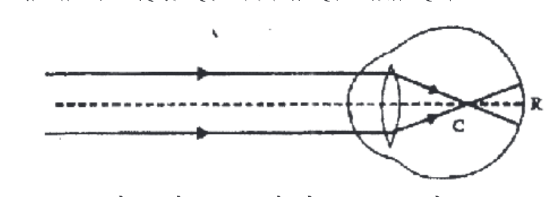
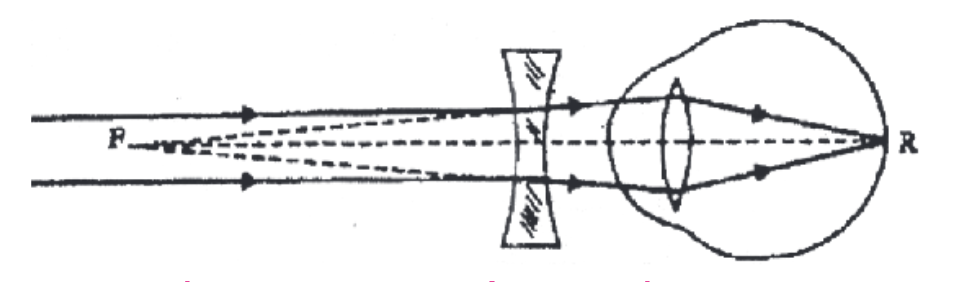
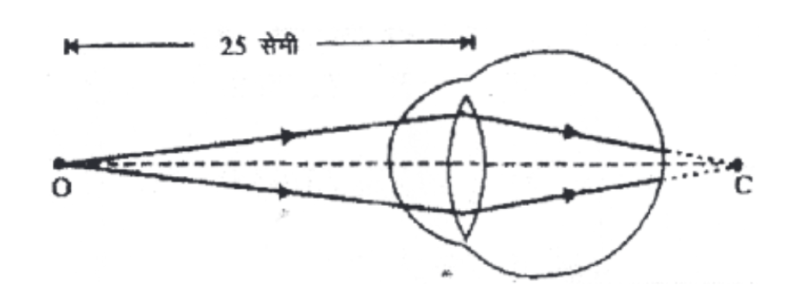
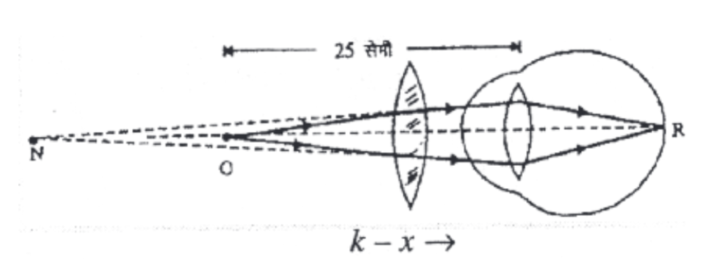

Critical angle: When a ray of light travels from a denser medium to a rarer medium, the angle of incidence in the denser medium for which the angle of refraction in the rarer medium becomes 90° is called the critical angle (C).
Necessary conditions:
(i) Light must travel from a denser medium to a rarer medium.
(ii) The angle of incidence in the denser medium must be equal to the critical angle.
The refractive index is related to the critical angle as: μ = 1 / sin C
Charge, Q = ± n e
| p-type semiconductor | n-type semiconductor |
|---|---|
| (i) Formed by doping a trivalent impurity (e.g. boron, aluminium) into pure silicon/germanium. | (i) Formed by doping a pentavalent impurity (e.g. phosphorus, arsenic) into pure silicon/germanium. |
| (ii) Majority charge carriers are holes (positive). | (ii) Majority charge carriers are electrons (negative). |
| (iii) The impurity is called an acceptor impurity. | (iii) The impurity is called a donor impurity. |
A shunt is a low resistance connected in parallel with a galvanometer.
(i) It is used to convert a galvanometer into an ammeter, so that a large current can be measured.
(ii) It protects the galvanometer from damage by allowing most of the heavy current to pass through the shunt instead of the galvanometer coil.
WWW (World Wide Web): The World Wide Web is a huge collection of websites and web pages stored on computers (servers) all over the world, which are linked together and can be accessed through the internet using a web browser.
Fax (Facsimile): Fax is a method of sending an exact copy of a document (text or pictures) from one place to another over telephone lines. The machine scans the document, sends it as electrical signals, and the receiving machine prints the same copy.
If an A.C. circuit is purely inductive or purely capacitive and the value of resistance is zero, then the phase angle between voltage and current is φ = 90°.
In this case, average power Pav = Vrms · Irms cos φ = 0 (∵ cos 90° = 0).
Hence no power is lost when this current flows, and such a current is called a wattless current.
LED stands for Light Emitting Diode. An LED is a p-n junction diode connected in forward bias, which emits light when current flows through it. LEDs are made from semiconducting compounds such as gallium arsenide or indium phosphide.
Application: LEDs are used in indicator lights, calculators, watches, traffic signals, etc.
| Nuclear fission | Nuclear fusion |
|---|---|
| (i) It is the splitting of a heavy nucleus into smaller nuclei, releasing a large amount of energy. | (i) It is the combination of two lighter nuclei to form a larger nucleus, releasing energy. |
| (ii) It is confined to heavy nuclei only. | (ii) It is confined to lighter nuclei only. |
| (iii) It is a chain reaction. | (iii) It is not a chain reaction. |
| (iv) A heavy nucleus splits into two lighter nuclei. | (iv) Two lighter nuclei fuse to form a heavy nucleus. |
| (v) Large amount of energy is released. | (v) Energy released is far more than that in fission. |
In spectroscopy, the Rydberg constant is a physical constant relating to atomic spectra. It is denoted by R∞ for heavy atoms and RH for hydrogen. It first appeared in the Rydberg formula as a fitting parameter.
Its S.I. unit is m⁻¹ and its value is 1.097 × 10⁷ m⁻¹.
Electric dipole: A pair of two equal and opposite charges (+q and −q) separated by a small distance (2a) is called an electric dipole. Its dipole moment is p = q × 2a, directed from the negative charge to the positive charge.
Potential at any point P: Let P be a point at distance r from the centre O of the dipole, making an angle θ with the dipole axis.
The potential due to the dipole at point P is the sum of the potentials due to +q and −q. After solving (for r >> a):
Special cases:
(i) On the axial line (θ = 0°): V = (1/4πε₀)(p/r²)
(ii) On the equatorial line (θ = 90°): V = 0 (since cos 90° = 0).
Interference of light: When two light waves of the same frequency and constant phase difference (coherent waves) travel in the same region, they superpose. At some points the waves add up to give bright fringes (constructive interference) and at other points they cancel to give dark fringes (destructive interference). This phenomenon is called interference of light.
Fringe width: In Young's double slit experiment, let the distance between the two slits be d, and the distance of the screen from the slits be D. Let λ be the wavelength of light.
The position of the n-th bright fringe is: yn = nλD / d
Fringe width (β) is the distance between two consecutive bright (or dark) fringes:
So the fringe width is directly proportional to the wavelength (λ) and the distance of the screen (D), and inversely proportional to the slit separation (d).
Due to growing age or other reasons, the eye may suffer from the following defects:
(i) Myopia (short-sightedness): In this defect a person can see nearby objects clearly but cannot see far away objects distinctly. It is caused by (a) a decrease in the focal length of the eye lens, or (b) the eyeball becoming too long. The image of a distant object is formed in front of the retina.
Remedy: It is corrected by using a concave lens of suitable focal length, which forms the image of distant objects on the retina.


(ii) Hypermetropia (far-sightedness): In this defect a person can see far away objects clearly but cannot see nearby objects distinctly. It is caused by (a) an increase in the focal length of the eye lens, or (b) the eyeball becoming too short. The image of a nearby object is formed behind the retina.
Remedy: It is corrected by using a convex lens of suitable focal length, which forms the image of nearby objects on the retina.


(iii) Presbyopia: With growing age the eye lens loses its flexibility, so the near point moves farther and the far point moves nearer. The eye cannot see both near and distant objects clearly.
Remedy: It is corrected by using bifocal lenses.
(iv) Astigmatism: In this defect horizontal and vertical lines at the same distance are not focused clearly at the same time. It is caused by the cornea not being perfectly spherical.
Remedy: It is corrected by using a cylindrical lens of suitable radius of curvature.